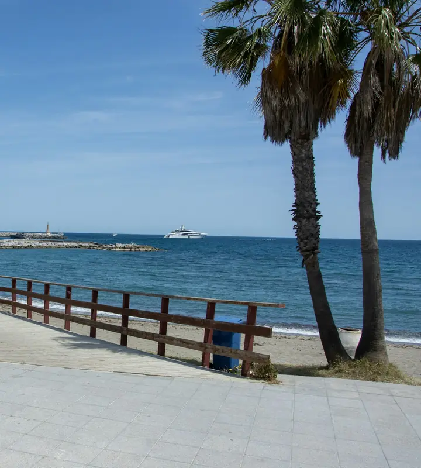

San Pedro Alcántara · desde 2015
Tu sonrisa, en buenas manos desde hace más de once años.
Clínica dental en el corazón de San Pedro Alcántara. Implantes, ortodoncia invisible, estética y odontología para toda la familia, con un plan claro y por escrito desde la primera visita.
- 2015Abrió en febrero de 2015
- 12áreas de tratamiento
- 3Dpanorámico y radiología digital de baja radiación
- L–Sabierto hasta las 21:00 entre semana
Tratamientos
Todo lo que tu boca necesita, bajo un mismo techo
Doce áreas, del primer empaste al implante. Toca cualquiera para ver en qué consiste y pedir cita directamente.
Precios: [precio] · la clínica no publica tarifas; se confirman tras la valoración.
Mapa dental interactivo
¿Dónde lo notas? Toca la zona.
Elige una zona de la boca y te mostramos qué tratamientos de la clínica suelen estar relacionados. Es orientativo: el diagnóstico siempre se hace en consulta.
Toca un diente, las encías o la articulación
Tu proceso, paso a paso
Qué pasa en cada visita
Sin sorpresas. Desliza para recorrer el camino completo de dos de nuestros tratamientos más pedidos.
Antes y después
Desliza y compara
Una ilustración para entender qué cambia con cada tratamiento. No es el caso de ningún paciente: cada boca es distinta y el resultado se valora en consulta.
El blanqueamiento aclara el tono del esmalte. Antes, revisamos caries y encías: se tratan siempre primero.
Ilustración orientativa · no es un paciente real
Tu primera visita
Sales sabiendo exactamente qué necesitas
- 1
Exploración meticulosa
Revisamos tu boca con calma y te escuchamos.
- 2
Radiografías, si hacen falta
Radiología digital de baja radiación y panorámico 3D.
- 3
Diagnóstico y plan
Un plan de tratamiento según tus necesidades.
- 4
Todo por escrito
Te lo entregamos por escrito. Tú decides cuándo empiezas.
Oferta de primera visita: [por confirmar con la clínica]
La clínica
Tecnología actual, trato de siempre
Abrimos en febrero de 2015 con una idea: ser un referente de la salud bucodental en San Pedro. Un ambiente relajado y acogedor, con los avances que de verdad marcan la diferencia.
Escáner intraoral iTero
Impresiones digitales en 3D, sin pastas incómodas.
Panorámico 3D
Radiología digital de baja radiación para diagnósticos precisos.
Implantes Straumann
Gama alta, superficie Roxolid SLActive.
Laboratorio y esterilización
Gabinetes luminosos, amplia sala de espera, laboratorio y sala de esterilización.
- Feb. 2015El Dr. Francisco Javier Cabello Gómez abre la clínica en San Pedro Alcántara.
- HoyMás de once años cuidando sonrisas sampedreñas, de los más pequeños a los mayores.
Equipo
Las personas detrás de tu sonrisa
Actividad clínica y formación constante para ofrecerte tratamientos personalizados.
-
Dr. Francisco Javier Cabello Gómez
Fundador y director médico · Odontólogo
- Licenciado en Odontología, Universidad Alfonso X el Sabio (Madrid)
- Máster en cirugía, periodoncia e implantes (2008–2010)
- Curso de cirugía guiada en implantología oral, Universidad de Tel Aviv
- Posgrado de Endodoncia Avanzada, instituto IESO (2014)
- Colegio de Odontólogos de Málaga
-
Dra. Cañosanto Jiménez Fernández
Odontóloga · Ortodoncia
- Licenciada en Odontología, Universidad de Granada
- Máster Universitario en Ortodoncia y Ortopedia Dentofacial
- Colegiada en Málaga
-
Alberto Cabello Gómez
Protésico dental · Recepción y administración
-
Melissa Palermo Godina
Auxiliar dental · Administración
Fotos del equipo: [fotos reales del equipo]
4,6/5
4,6 de 5 en Google, con 97 reseñas
Puntuación y número de reseñas según la ficha de Google Maps de la clínica (consultada el 18 de noviembre de 2026).
Leer las reseñas en Google(se abre en una pestaña nueva)Pedir cita
Tres toques y listo
Elige tratamiento, día y franja. Te preparamos el mensaje y tú lo envías por WhatsApp o email. La clínica te confirma la hora.
- Sin registros ni contraseñas
- Nada se envía hasta que tú lo decidas
- ¿Prefieres llamar? 952 78 30 87
Preguntas frecuentes
Resolvemos tus dudas
¿No encuentras la tuya? Escríbenos por WhatsApp y te respondemos.
¿Qué pasa en la primera visita?
Hacemos una exploración meticulosa de tu boca, valoramos radiografías si son necesarias, te damos un diagnóstico y te proponemos un plan de tratamiento. Te lo entregamos por escrito y tú decides cuándo empezar.
Tengo dolor o una urgencia, ¿qué hago?
Llámanos al 952 78 30 87 o escríbenos por WhatsApp al 665 482 102 en horario de clínica y te diremos cómo actuar. Atención fuera de horario: [por confirmar]. Ante una urgencia grave (traumatismo fuerte, hinchazón que dificulta respirar o tragar), llama al 112.
¿Trabajáis con seguros dentales?
Cada aseguradora tiene sus condiciones. Pregúntanos por la tuya antes de la cita y te lo aclaramos. Aseguradoras con las que trabaja la clínica: [por confirmar].
¿Atendéis a niños?
Sí. Tenemos odontopediatría: consultas profesionales y a la vez divertidas para que los niños estén cómodos y sus familias tranquilas. La salud dental importa desde edades tempranas, incluso desde el embarazo.
¿Cuánto cuesta un implante o la ortodoncia invisible?
Depende de cada caso, por eso el presupuesto se da tras la valoración y siempre por escrito. Precio orientativo: [precio].
¿Dónde aparco?
Estamos en la Av. de la Constitución 19, 1º A, en el centro de San Pedro Alcántara. Aparcamiento recomendado: [por confirmar].
Visítanos
En el corazón de San Pedro Alcántara
Av. de la Constitución 19, 1º A
29670 San Pedro Alcántara, Marbella (Málaga)
+34 952 78 30 87 · +34 665 482 102
Horario
Lun–Vie 9:00–21:00
